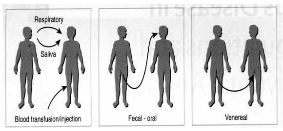
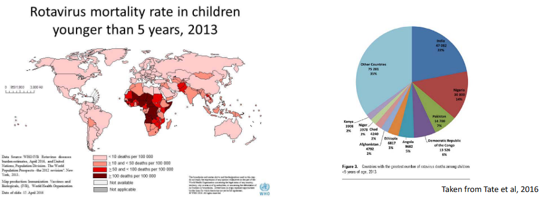

9 Routes of Virus Transmission and Consequences
The above table shows various ways that different viruses can spread and ultimately infect their hosts.
9.1 Basic Reproductive Number (i.e., R0)
Let’s talk about something called the basic reproduction number or R number. It helps us understand how contagious a disease is.
Imagine there’s a new disease, and nobody has been exposed to it before. The R number tells us how many new cases we can expect from just one infected person.
Here’s the deal: If the R number is 2, it means that one sick person is likely to pass the disease to two other people. And then those two people can each pass it to two more, and so on. The R number helps us see how fast a disease can spread.
But, this number assumes that no one is already immune to the disease and that nobody has been vaccinated. In the real world, things are a bit more complicated, but the R number gives us a starting point to understand how easily a disease can jump from person to person.
9.2 Modes of Virus Transmission

The above figure shows how viruses can spread from one human (i.e., host) to another - for instance, through the air, the fecal-oral (i.e., from contaminated poop), and vice versa.
9.2.1 Respiratory Route

You know when someone sneezes, and you see those little water droplets in the air? Those are like tiny vehicles for germs. If you’re close to someone who’s sick and they sneeze, those droplets might carry the flu virus, and if you breathe them in, you can get sick too.
In 2018, there were a lot of people around the world who got sick with the flu, and sadly, many of them passed away. The World Health Organization reported up to 646,000 deaths from the flu.
9.2.2 Fomites
Fomites are just things like surfaces and objects. Sometimes, when people are sick, they can leave tiny drops of their respiratory secretions (like from coughing or sneezing) on these surfaces.
If a person touches these contaminated surfaces, they can pick up those germs on their hands. And if they touch their face, like their mouth or nose, those germs can get inside their body, making them sick too.
A couple of diseases, like SARS (Severe Acute Respiratory Syndrome) and RSV (Respiratory Syncytial Virus), can spread this way. It’s not as far-reaching as aerosols (those tiny droplets in the air), so it usually affects people who are in closer contact with each other or who touch the same things.
9.2.3 Blood
Two examples are HBV (Hepatitis B) and HCV (Hepatitis C). These diseases can be spread through blood in a few different ways.
One way is through blood transfusion. Sometimes, people need to receive blood from donors, like during surgeries or if they have certain medical conditions. If the blood they receive is infected with HBV or HCV, it can make them sick.
Another way is through contaminated blood products. Sometimes, people with specific medical conditions need treatments that use blood products. If these products aren’t screened and tested for diseases like HBV and HCV, they can end up causing infections.
9.2.4 Fecal Oral Route
There are different ways through which some viruses can make people sick, and we can break these down into a few categories. One way is by eating contaminated food. For example, hepatitis A can be found in shellfish. If these shellfish are not properly cleaned or cooked, the virus can get into our bodies when we eat them.
Another way is by ingesting contaminated water. This means drinking water that’s been polluted, often with sewage. The polio virus is one example of a virus that can spread through contaminated water.
Viruses can also spread through direct contact with infected people or by touching things they’ve touched. For instance, when we shake hands with someone who has a virus, we might pick it up. This can also happen when we touch things that are contaminated with viruses, like doorknobs or surfaces. The Norwalk virus is one that can spread this way.
And when it comes to the “CRAP” viruses, it’s an easy way to remember four groups of viruses that can make us sick: C for Calicivirus (like Norwalk), R for Rotavirus, A for Adenovirus, and P for Picornavirus (which includes viruses like Hepatitis A and Poliovirus).
Finally, using shared needles for things like drug use can also spread these diseases. When people share needles, there’s a risk that they can accidentally inject themselves with blood from someone else who’s infected.

The thing about Enteroviruses is that they cause about 215000 deaths in children per year (which is about 3.14% of all child deaths across the globe).
9.2.5 Veneral
This just refers to sex (i.e., unprotected sex). Interestingly enough, there’s evidence to suggest that although the Zika virus is generally spread through mosquitos, that it can also spread via sex.
9.3 Modes of Transmission
Zoonosis is a term used to describe how viruses can be passed from animals to humans. This can happen in several ways and involve many different animals. Sometimes, the transmission occurs directly from animals to humans, like when we’re in close contact with them. Other times, it’s indirect, and we might get the virus through something that came from animals, like their meat or other products.
When it comes to zoonotic viruses, they often have a close connection to specific animals. This means that a particular virus is usually passed from a certain animal to humans. In some cases, insects play a role in this transmission. For instance, the Aedes mosquito can carry viruses like dengue and yellow fever. Ticks are another example and can transmit viruses like Tick-borne encephalitis. Even tiny creatures like Culicoides, often called midges, can be involved in spreading viruses such as the Blue tongue virus. Sand flies are culprits too, transmitting viruses like Chandipura.
It’s not just insects; other animals also play a role. Wild animals, like dogs, can transmit the rabies virus. Even animals we’re more familiar with, like chickens, can be carriers of zoonotic viruses. Chickens, for instance, can carry the avian H5N1 influenza virus. So, zoonotic viruses have various paths to reach humans, and specific animals are often part of this transmission process.
9.3.1 Arboviruses
Some viruses are quite crafty and employ insects as their messengers, spreading infections. These are called Arboviruses, and a couple of examples include dengue and yellow fever viruses. Here’s how it works: these viruses make themselves at home inside insects. After an insect feeds on an infected host (like a human or animal), the virus multiplies inside the insect. Then, when the insect bites another host (like another human), it transfers the virus along with its saliva.
The virus gets into the new host’s body at the bite site and starts multiplying there. After a bit of replication at the bite site, it moves into the bloodstream and travels around the body. It can infect various organs and tissues, depending on the virus. For instance, yellow fever virus often sets up shop in the liver tissue. So, these arboviruses have a pretty complex journey, involving both insects and humans or animals to spread their infections.
The Yellow Fever Virus (i.e., YFV) also spreads two ways: the urban and the jungle cycle.
9.3.2 Indirect versus Direct Transmission
Virus transmission can happen through direct or indirect means. In direct transmission, the virus goes directly from one host to another, like when a person gets infected from handling infected chickens with avian H5N1 virus.
Indirect transmission is a bit more complicated. It might involve an intermediate species, which acts as a middleman for the virus. For instance, a virus could go from a bat to a primate, and then from that primate to a human. So, in this case, it takes a little detour through an intermediate host before reaching the final destination, which is the human
9.4 Route of Entry and Tissue Tropism
When a virus enters a host, the initial cells it infects depend on how it enters the body. This is like the virus’s first point of contact with the host.
After the virus enters the body, there’s a waiting period called the incubation period. During this time, the virus multiplies, creating more of itself. This is an important step for the virus to establish an infection. It’s like the virus needs to build an army before it can start causing trouble.
The virus might move from where it initially entered to a specific organ or tissue in the body. It’s like the virus is traveling to its favorite vacation spot inside the host. It can use different methods to do this, like hitching a ride through the bloodstream (which is called viremia) or even traveling through the nervous system.
All these movements and replications take time, and this whole process leads to the onset of disease symptoms. How soon these symptoms show up depends on which organ or tissue the virus has infected. When the symptoms appear, it’s usually when the immune system is working at its maximum level, trying to fight off the virus.
9.4.1 Acute versus Chronic Infections
When you have an acute infection, it means you get sick, but it doesn’t last very long. The symptoms come and go relatively quickly, and your body manages to clear the virus. Sometimes you recover completely, like when you catch a common cold (rhinovirus). But in more severe cases, it can lead to death, as seen with the highly pathogenic avian influenza virus (HPAI H5N1).
On the other hand, chronic infection means the symptoms and the virus stick around in your body for a long time. You don’t get better quickly. Some examples are hepatitis B and HIV-1. In these cases, the virus can stay with you for years, and it’s harder for your body to get rid of it. It’s like having a persistent guest that doesn’t want to leave.
Whether someone recovers from an infection or doesn’t make it (death) affects how the virus can spread to others.
If someone gets better, it’s less likely they’ll pass the virus to someone else. They might not be contagious anymore.
But if the person doesn’t make it (dies), the virus could still infect others. It depends on the virus and how it spreads.
9.5 Quarantines
Quarantine is a powerful method to stop the spread of infections. It’s like keeping infected individuals away from healthy people.
Where you quarantine someone depends on how the virus behaves:
Sometimes, people can stay at home, and it’s called self-home quarantine. This works well for illnesses like seasonal flu.
But for really dangerous or new viruses with high death rates, like SARS, special facilities are used. These places are designed to keep the virus from getting out and infecting more people.
In both cases, the goal is to prevent the virus from going to new people and slow down the disease’s spread.
Finding infected people, especially when we’re dealing with a new virus and might not have many tests, can be really tricky, especially at places like airports. Imagine trying to test everyone; it’s just not practical.
One way to tackle this problem is by using a strategy that’s a bit like a heat map. Instead of testing everyone, we can look at a lot of information, like who’s traveling from places where the virus is common, and who’s showing signs of illness. Then we can focus our testing efforts on those who seem more likely to be infected.
This way, we’re trying to be smart about where we look for infections and not waste resources testing everyone.
9.5.1 Drugs and Quarantine
Imagine you have a new vaccine to protect people from a disease, but you can’t give it to everyone. So what do you do? You use a strategy called ring vaccination. Here’s how it works.
First, you find someone who’s sick with the disease, let’s say it’s a new virus. You then trace back to see who this sick person has been in close contact with – family, friends, people they work with, and so on.
Then, you vaccinate those close contacts. This way, if any of them were already infected but didn’t show symptoms yet, the vaccine can help stop them from spreading the virus to others.
But, sometimes it’s hard to trace all those contacts, especially if the virus is spreading quickly. In that case, instead of tracing contacts, you might decide to just vaccinate everyone in the area where the disease is spreading. This way, you’re covering a larger group to stop the virus in its tracks.
So, ring vaccination is like creating a protective ring around the disease, trying to keep it from spreading any further. It’s a smart way to use vaccines to stop outbreaks.
9.5.2 Antivirus Drugs
So, what if we don’t have a vaccine for a disease, like during a fast-spreading flu pandemic? In this case, we can turn to antiviral drugs. These are special medications that can help slow down how quickly the virus spreads.
Imagine there’s a new flu virus that’s making a lot of people sick, and we don’t have a vaccine for it yet. But we do have antiviral drugs like Tamiflu. We can use these drugs to reduce how many people get infected.
One way to use them is by giving the antiviral drugs to people who are most likely to catch the virus. For example, healthcare workers who are in close contact with sick patients.
However, there’s a catch. Viruses can sometimes change and become resistant to these drugs. It’s a bit like how some bacteria can become resistant to antibiotics. So, while antiviral drugs can help in a pandemic, we need to be careful about not overusing them.
9.5.3 Swiss Cheese Model
Think of controlling a virus like protecting a piece of cheese. There’s no single method that can block the virus completely. So, we use a bunch of different measures, like slices of Swiss cheese, to protect ourselves.
Each slice represents a different way to stop the virus from spreading. Some slices might be personal things like wearing masks, washing your hands, and staying home when you’re sick. Other slices are shared, like testing and tracing to find out who’s infected and quarantine to keep them isolated.
The idea is that when you stack all these slices together, it becomes really hard for the virus to slip through the holes in the cheese. So, even if one layer has some gaps, the other layers help block the virus.